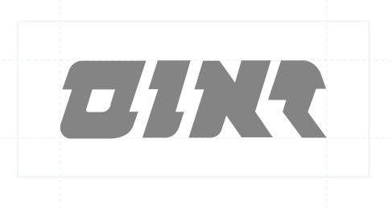
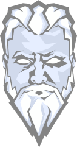
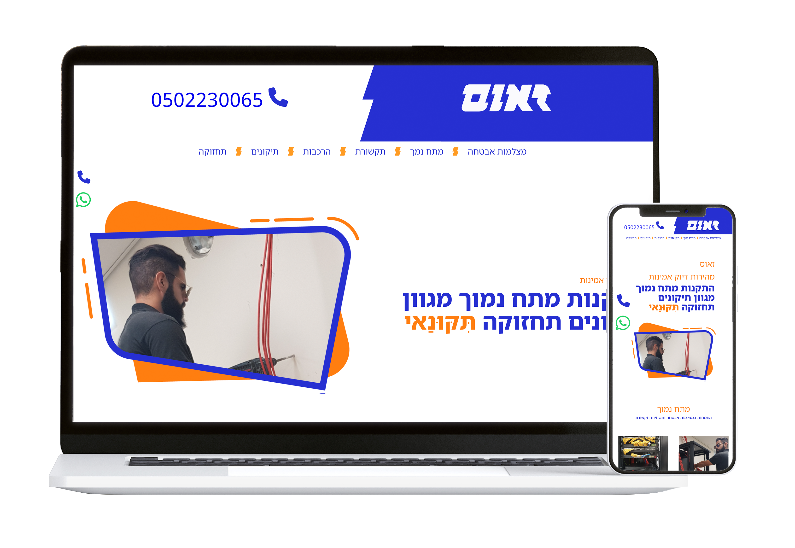

Zeus
A comprehensive branding and web development project for an independent low-voltage technician specializing in security cameras. This project seamlessly integrated brand strategy, visual design, and front-end development to create a professional and cohesive brand identity.
- My Role:
- Sole Creative Lead
- Challenge:
- The client needed a cohesive brand identity that could appeal to both individual homeowners and to future potential customers, such as larger businesses.
Process & Solution:
- Brand :
- We developed a brand concept around the name "Zeus", the Greek god of lightning, to cleverly reference the electrical nature of the work. The visual language was built on bold, solid typography to convey reliability, with a subtle lightning element integrated into the logo's letterforms.
- Color & Aesthetics:
- The color palette was a deliberate choice of blue to represent professionalism and trust, paired with orange to signify energy, speed, and the client's friendly "service with a smile" attitude.
- marketing Materials:
- Marketing designed a full suite of marketing materials, including business cards, magnets, receipts, and custom camera stickers that adhere to industry standards.
- Website Development:
- I built a minimalist, single-page website using clean HTML and CSS. The design was intentionally uncluttered and straightforward to make it easy for end-users—who often lack technical knowledge—to understand the services offered and contact the client directly. The site included quick-access links for WhatsApp and phone calls.
visual element


#262FD1
#FF9B24
font name
font example

The client was provided with a complete and ready-to-use brand that projects reliability, professionalism, and potential for growth. The branding elements for print, such as business cards and camera stickers, are actively used in his day-to-day work, and the website provides a professional digital presence.This project demonstrates a successful execution of a full creative vision, from initial concept and branding to a final, functional digital product.